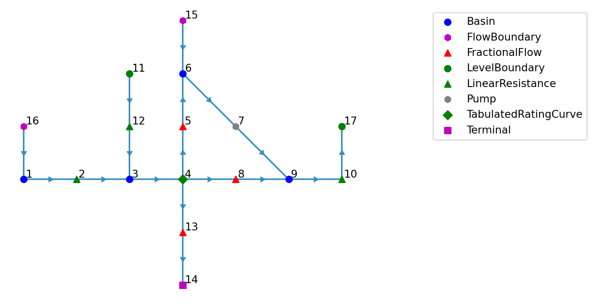
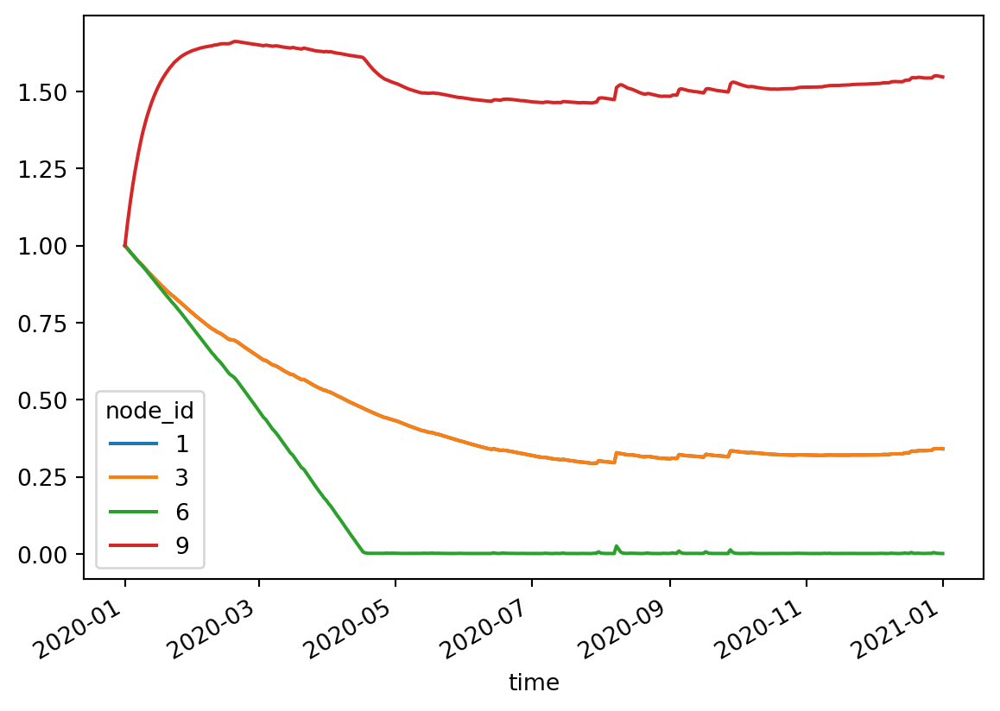
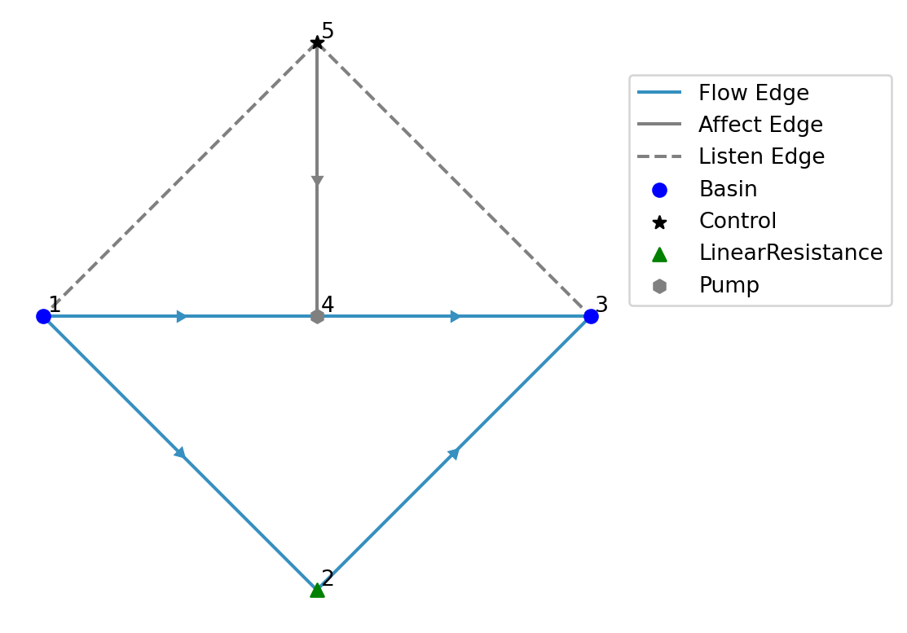
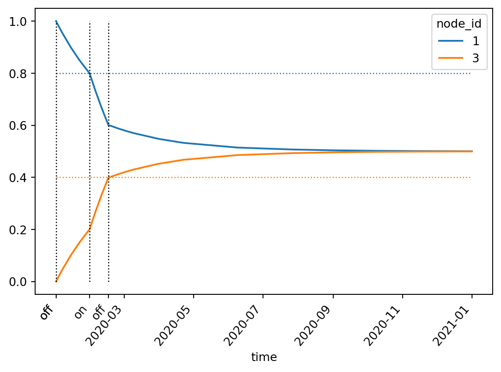

import geopandas as gpd
import numpy as np
import pandas as pd
from pathlib import Path
import ribasimExamples
1 Basic model with static forcing
Set up the nodes:
xy = np.array(
[
(0.0, 0.0), # 1: Basin,
(1.0, 0.0), # 2: ManningResistance
(2.0, 0.0), # 3: Basin
(3.0, 0.0), # 4: TabulatedRatingCurve
(3.0, 1.0), # 5: FractionalFlow
(3.0, 2.0), # 6: Basin
(4.0, 1.0), # 7: Pump
(4.0, 0.0), # 8: FractionalFlow
(5.0, 0.0), # 9: Basin
(6.0, 0.0), # 10: LinearResistance
(2.0, 2.0), # 11: LevelBoundary
(2.0, 1.0), # 12: LinearResistance
(3.0, -1.0), # 13: FractionalFlow
(3.0, -2.0), # 14: Terminal
(3.0, 3.0), # 15: FlowBoundary
(0.0, 1.0), # 16: FlowBoundary
(6.0, 1.0), # 17: LevelBoundary
]
)
node_xy = gpd.points_from_xy(x=xy[:, 0], y=xy[:, 1])
node_type = [
"Basin",
"ManningResistance",
"Basin",
"TabulatedRatingCurve",
"FractionalFlow",
"Basin",
"Pump",
"FractionalFlow",
"Basin",
"LinearResistance",
"LevelBoundary",
"LinearResistance",
"FractionalFlow",
"Terminal",
"FlowBoundary",
"FlowBoundary",
"LevelBoundary",
]
# Make sure the feature id starts at 1: explicitly give an index.
node = ribasim.Node(
static=gpd.GeoDataFrame(
data={"type": node_type},
index=pd.Index(np.arange(len(xy)) + 1, name="fid"),
geometry=node_xy,
crs="EPSG:28992",
)
)Setup the edges:
from_id = np.array(
[1, 2, 3, 4, 4, 5, 6, 8, 7, 9, 11, 12, 4, 13, 15, 16, 10], dtype=np.int64
)
to_id = np.array(
[2, 3, 4, 5, 8, 6, 7, 9, 9, 10, 12, 3, 13, 14, 6, 1, 17], dtype=np.int64
)
lines = ribasim.utils.geometry_from_connectivity(node, from_id, to_id)
edge = ribasim.Edge(
static=gpd.GeoDataFrame(
data={
"from_node_id": from_id,
"to_node_id": to_id,
"edge_type": len(from_id) * ["flow"],
},
geometry=lines,
crs="EPSG:28992",
)
)Setup the basins:
profile = pd.DataFrame(
data={
"node_id": [1, 1, 3, 3, 6, 6, 9, 9],
"storage": [0.0, 500.0] * 4,
"area": [0.0, 1000.0] * 4,
"level": [0.0, 1.0] * 4,
}
)
# Convert steady forcing to m/s
# 2 mm/d precipitation, 1 mm/d evaporation
seconds_in_day = 24 * 3600
precipitation = 0.002 / seconds_in_day
evaporation = 0.001 / seconds_in_day
static = pd.DataFrame(
data={
"node_id": [0],
"drainage": [0.0],
"potential_evaporation": [evaporation],
"infiltration": [0.0],
"precipitation": [precipitation],
"urban_runoff": [0.0],
}
)
static = static.iloc[[0, 0, 0, 0]]
static["node_id"] = [1, 3, 6, 9]
basin = ribasim.Basin(profile=profile, static=static)Setup linear resistance:
linear_resistance = ribasim.LinearResistance(
static=pd.DataFrame(
data={"node_id": [10, 12], "resistance": [5e3, (3600.0 * 24) / 100.0]}
)
)Setup Manning resistance:
manning_resistance = ribasim.ManningResistance(
static=pd.DataFrame(
data={
"node_id": [2],
"length": [900.0],
"manning_n": [0.04],
"profile_width": [6.0],
"profile_slope": [3.0],
}
)
)Set up a rating curve node:
# Discharge: lose 1% of storage volume per day at storage = 1000.0.
q1000 = 1000.0 * 0.01 / seconds_in_day
rating_curve = ribasim.TabulatedRatingCurve(
static=pd.DataFrame(
data={
"node_id": [4, 4],
"level": [0.0, 1.0],
"discharge": [0.0, q1000],
}
)
)Setup fractional flows:
fractional_flow = ribasim.FractionalFlow(
static=pd.DataFrame(
data={
"node_id": [5, 8, 13],
"fraction": [0.3, 0.6, 0.1],
}
)
)Setup pump:
pump = ribasim.Pump(
static=pd.DataFrame(
data={
"node_id": [7],
"flow_rate": [0.5 / 3600],
}
)
)Setup level boundary:
level_boundary = ribasim.LevelBoundary(
static=pd.DataFrame(
data={
"node_id": [11, 17],
"level": [0.5, 1.5],
}
)
)Setup flow boundary:
flow_boundary = ribasim.FlowBoundary(
static=pd.DataFrame(
data={
"node_id": [15, 16],
"flow_rate": [-1e-4, 1e-4],
}
)
)Setup terminal:
terminal = ribasim.Terminal(
static=pd.DataFrame(
data={
"node_id": [14],
}
)
)Setup a model:
model = ribasim.Model(
modelname="basic",
node=node,
edge=edge,
basin=basin,
level_boundary=level_boundary,
flow_boundary=flow_boundary,
pump=pump,
linear_resistance=linear_resistance,
manning_resistance=manning_resistance,
tabulated_rating_curve=rating_curve,
fractional_flow=fractional_flow,
terminal=terminal,
starttime="2020-01-01 00:00:00",
endtime="2021-01-01 00:00:00",
)Let’s take a look at the model:
model.plot()<Axes: >
Write the model to a TOML and GeoPackage:
datadir = Path("data")
model.write(datadir / "basic")2 Update the basic model with transient forcing
This assumes you have already created the basic model with static forcing.
import numpy as np
import pandas as pd
import xarray as xr
import ribasimmodel = ribasim.Model.from_toml(datadir / "basic/basic.toml")time = pd.date_range(model.starttime, model.endtime)
day_of_year = time.day_of_year.to_numpy()
seconds_per_day = 24 * 60 * 60
evaporation = (
(-1.0 * np.cos(day_of_year / 365.0 * 2 * np.pi) + 1.0) * 0.0025 / seconds_per_day
)
rng = np.random.default_rng(seed=0)
precipitation = (
rng.lognormal(mean=-1.0, sigma=1.7, size=time.size) * 0.001 / seconds_per_day
)We’ll use xarray to easily broadcast the values.
timeseries = (
pd.DataFrame(
data={
"node_id": 1,
"time": time,
"drainage": 0.0,
"potential_evaporation": evaporation,
"infiltration": 0.0,
"precipitation": precipitation,
"urban_runoff": 0.0,
}
)
.set_index("time")
.to_xarray()
)
basin_ids = model.basin.static["node_id"].to_numpy()
basin_nodes = xr.DataArray(
np.ones(len(basin_ids)), coords={"node_id": basin_ids}, dims=["node_id"]
)
forcing = (timeseries * basin_nodes).to_dataframe().reset_index()state = pd.DataFrame(
data={
"node_id": basin_ids,
"storage": 1000.0,
"concentration": 0.0,
}
)model.basin.forcing = forcing
model.basin.state = statemodel.modelname = "basic-transient"
model.write(datadir / "basic-transient")Now run the model with ribasim basic-transient/basic.toml. After running the model, read back the output:
df_basin = pd.read_feather(datadir / "basic-transient/output/basin.arrow")
df_basin_wide = df_basin.pivot_table(
index="time", columns="node_id", values=["storage", "level"]
)
df_basin_wide["level"].plot()<Axes: xlabel='time'>
df_flow = pd.read_feather(datadir / "basic-transient/output/flow.arrow")
df_flow["edge"] = list(zip(df_flow.from_node_id, df_flow.to_node_id))
df_flow["flow_m3d"] = df_flow.flow * 86400
ax = df_flow.pivot_table(index="time", columns="edge", values="flow_m3d").plot()
ax.legend(bbox_to_anchor=(1.3, 1), title="Edge")<matplotlib.legend.Legend at 0x7f3c92717710>
type(df_flow)pandas.core.frame.DataFrame3 Model with control
Set up the nodes:
xy = np.array(
[
(0.0, 0.0), # 1: Basin
(1.0, -1.0), # 2: LinearResistance
(2.0, 0.0), # 3: Basin
(1.0, 0.0), # 4: Pump
(1.0, 1.0), # 5: Control
]
)
node_xy = gpd.points_from_xy(x=xy[:, 0], y=xy[:, 1])
node_type = [
"Basin",
"LinearResistance",
"Basin",
"Pump",
"Control",
]
# Make sure the feature id starts at 1: explicitly give an index.
node = ribasim.Node(
static=gpd.GeoDataFrame(
data={"type": node_type},
index=pd.Index(np.arange(len(xy)) + 1, name="fid"),
geometry=node_xy,
crs="EPSG:28992",
)
)Setup the edges:
from_id = np.array([1, 2, 1, 4, 5], dtype=np.int64)
to_id = np.array([2, 3, 4, 3, 4], dtype=np.int64)
# Note: currently only controlling pumps is supported in the Julia core
edge_type = 4 * ["flow"] + ["control"]
lines = ribasim.utils.geometry_from_connectivity(node, from_id, to_id)
edge = ribasim.Edge(
static=gpd.GeoDataFrame(
data={"from_node_id": from_id, "to_node_id": to_id, "edge_type": edge_type},
geometry=lines,
crs="EPSG:28992",
)
)Setup the basins:
profile = pd.DataFrame(
data={
"node_id": [1, 1, 3, 3],
"storage": [0.0, 100.0] * 2,
"area": [100.0, 100.0] * 2,
"level": [0.0, 1.0] * 2,
}
)
static = pd.DataFrame(
data={
"node_id": [1, 3],
"drainage": [0.0] * 2,
"potential_evaporation": [0.0] * 2,
"infiltration": [0.0] * 2,
"precipitation": [0.0] * 2,
"urban_runoff": [0.0] * 2,
}
)
state = pd.DataFrame(data={"node_id": [1, 3], "storage": [100.0, 0.0]})
basin = ribasim.Basin(profile=profile, static=static, state=state)Setup the control:
condition = pd.DataFrame(
data={
"node_id": [5, 5],
"listen_node_id": [1, 3],
"variable": ["level", "level"],
"greater_than": [0.8, 0.4],
}
)
# False, False -> "on"
# True, False -> "off"
# False, True -> "off"
# True, True -> "On"
# Truth state as subset of the conditions above and in that order
logic = pd.DataFrame(
data={
"node_id": [5, 5, 5, 5],
"truth_state": ["FF", "TF", "FT", "TT"],
"control_state": ["on", "off", "off", "on"],
}
)
control = ribasim.Control(condition=condition, logic=logic)Setup the pump:
pump = ribasim.Pump(
static=pd.DataFrame(
data={
"control_state": ["off", "on"],
"node_id": [4, 4],
"flow_rate": [0.0, 1e-5],
}
)
)Setup the linear resistance:
linear_resistance = ribasim.LinearResistance(
static=pd.DataFrame(
data={
"node_id": [2],
"resistance": [1e5],
}
)
)Setup a model:
model = ribasim.Model(
modelname="control",
node=node,
edge=edge,
basin=basin,
linear_resistance=linear_resistance,
pump=pump,
control=control,
starttime="2020-01-01 00:00:00",
endtime="2021-01-01 00:00:00",
)Let’s take a look at the model:
model.plot()<Axes: >
Listen edges are plotted with a dashed line since they are not present in the “Edge / static” schema but only in the “Control / condition” schema.
datadir = Path("data")
model.write(datadir / "control")from matplotlib.dates import date2num
df_basin = pd.read_feather(datadir / "control/output/basin.arrow")
df_basin_wide = df_basin.pivot_table(
index="time", columns="node_id", values=["storage", "level"]
)
ax = df_basin_wide["level"].plot()
ax.hlines(
model.control.condition.greater_than,
df_basin.time[0],
df_basin.time.max(),
lw=1,
ls=":",
color=["C0", "C1"],
)
df_control = pd.read_feather(datadir / "control/output/control.arrow")
ax.vlines(df_control.time, 0, 1, lw=1, ls=":", color="k")
ax.set_xticks(
list(ax.get_xticks()) + date2num(df_control.time).tolist(),
list(ax.get_xticklabels()) + df_control.control_state.tolist(),
rotation=50,
);
Let’s print an overview of what happened with control:
model.print_control_record(datadir / "control/output/control.arrow")0. At 2020-01-01 00:00:00 the control node with ID 5 reached truth state TF:
For node ID 1 (Basin): level > 0.8
For node ID 3 (Basin): level < 0.4
This yielded control state "off":
For node ID 4 (Pump): flow_rate = 0.0
1. At 2020-01-30 12:07:44.413000 the control node with ID 5 reached truth state FF:
For node ID 1 (Basin): level < 0.8
For node ID 3 (Basin): level < 0.4
This yielded control state "on":
For node ID 4 (Pump): flow_rate = 1e-05
2. At 2020-02-16 04:47:34.025000 the control node with ID 5 reached truth state FT:
For node ID 1 (Basin): level < 0.8
For node ID 3 (Basin): level > 0.4
This yielded control state "off":
For node ID 4 (Pump): flow_rate = 0.0